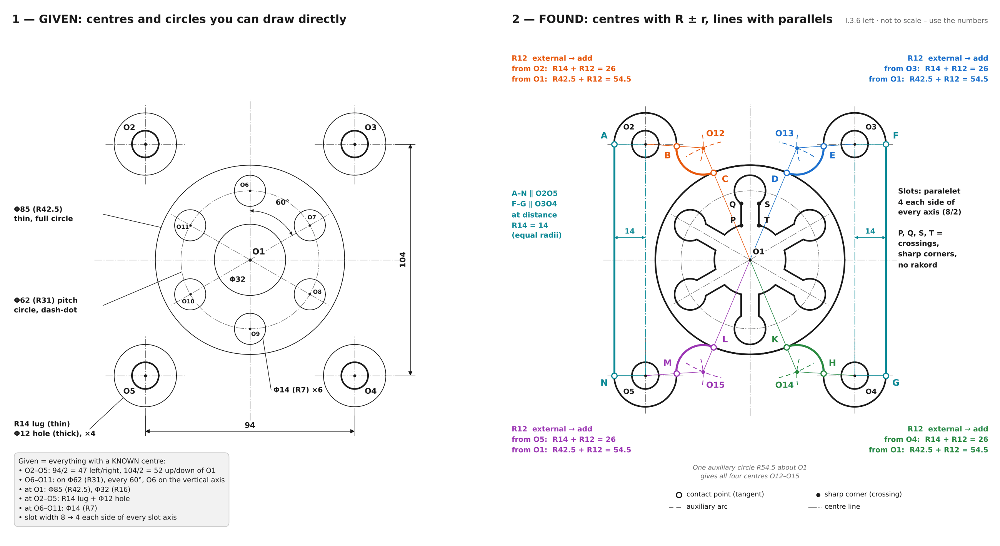
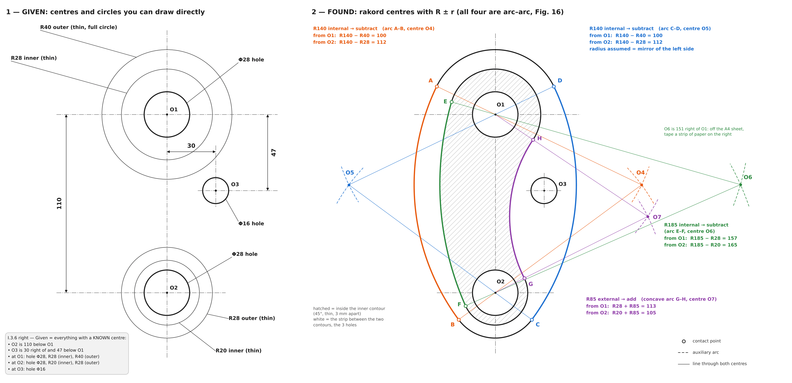

Animacioni
▶
Animacioni për këtë detyrë është në përgatitje.
Ndërkohë shiko fletët e ndërtimit dhe faqet e librit më poshtë.
Fletët e ndërtimit e dhëna → e gjetura
Çdo fletë tregon majtas çka vizatohet drejtpërdrejt nga të dhënat dhe djathtas si gjenden qendrat e rakordeve dhe pikat e kontaktit.

